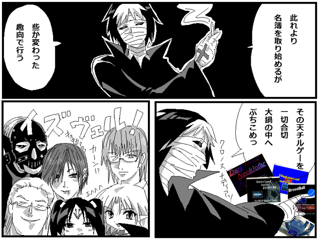

 |
|
| 作者：ダークオルカ | |
| ツクール：MV | |
| ジャンル：闇鍋 | |
| 配信/投稿：どうでもいいよ | |
| keyword：---- | |
| 投票：投票はこちら | |
| 作者コメント： 白く輝く煙 鋼色に煌く容器 まるで旨味を連想させるが 余りにも酷い殺気を放っている・・・ あれは・・・ 御馳走等とは程遠い・・・・ あれは・・・・ あの闇に包まれた 悪夢の鍋は・・・・・間違いない 炬燵の中心核 致死量の最終晩餐 ハッチポッチ ～ 闇への生贄 | |
| 管理人コメント： つまりハッチポッチステーションは闇鍋駅だった……？ |
|
| 更新履歴：01/23遅刻提出 | |
| ダウンロード / 感想掲示板 | |
| 前の作品 / 次の作品 / TOPへ戻る | |